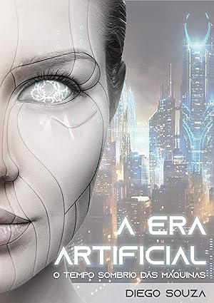

A história em que a inteligência artificial permitiu aos robôs se tornarem
a espécie dominante do nosso planeta. Uma luta
incessante pela sobrevivência
humana tem início em um cenário catastrófico dominado pela guerra e pelo caos.
Era Artificial - O tempo sombrio das máquinas deixa o leitor apreensivo com algumas
situações que ocorrem em um cenário
catastrófico tomado pela destruição. E isso o leva a refletir:
veremos um dia a tão temida singularidade tecnológica?
Diego Souza é apaixonado por tecnologia e trabalha com Desenvolvimento WEB. Também é eterno fã de
ficção científica e
escritor nas horas vagas. Carioca da gema, ama o Rio de Janeiro, cidade onde nasceu.
O livro A Era Artificial apresenta um cenário apocalíptico no qual os robôs alcançaram sua independencia
e com isso se tornaram
a espécie dominante do planeta. De que forma a humanidade pode enfrentar esse poderoso
inimigo?
Esses e mais detalhes podem ser vistos na história de ficção científica que promete fazer você refletir sobre o
futuro da humanidade!